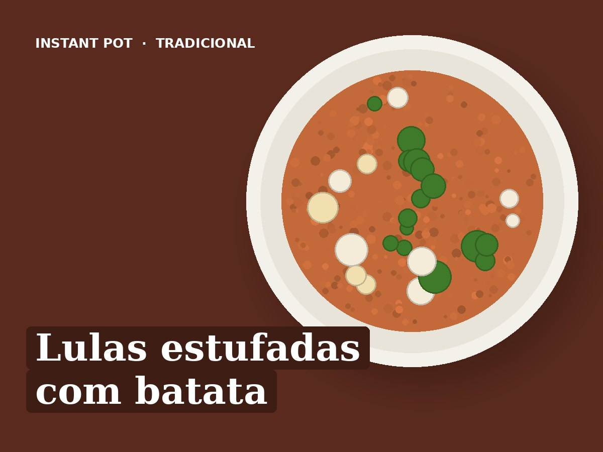

Lulas estufadas com batata
Ingredientes
- 800 g de lulas limpas em argolas
- 500 g de batata em cubos
- 1 cebola
- 2 dentes de alho
- 2 tomates maduros
- 1 pimento vermelho
- 100 ml de vinho branco
- 100 ml de água
- 1 folha de louro
- 1 colher de chá de colorau
- Coentros
- 1 colher de sopa de azeite
- Sal q.b.
Preparação
- Saltear: azeite, cebola, alho e pimento, 3 minutos. Deitar o vinho e raspar o fundo.
- Juntar as lulas, o tomate em pedaços, a água, o louro, o colorau e o sal.
- Pressão alta, 12 minutos. Libertação rápida.
- Juntar a batata.
- Pressão alta, 4 minutos. Libertação rápida. Polvilhar com coentros.